Candidate List 20260521 Previous Day Next Day Section 1: New Sources (age<1d) Cosmological Afterglow
Section 2: Old (1-5d) sources observed last night placeholder
Section 1: New Afterglow/FBOT Cands Last Night (3)
1. ZTF26aaxthly (FBOT?) [Back to Top] [Share] [Trigger Swift] [Fritz ] [Lasair ]RA, Dec: 313.56202, 9.15238 20h54m14.88s, 9d 9m8.57sGalactic (l, b): 56.56292, -22.09211 ext(g-r) = 0.099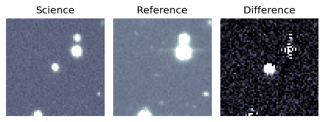
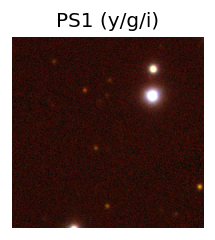
LegacySurvey: 1 sources in 3 arcsec Closest: d = 0.04 arcsec, 313.5 deg (east of north) photoz=0.48 (68% bounds 0.12, 1.11), type=REX peak abs mag = -26.53 (68% bounds -23.12, -28.75) 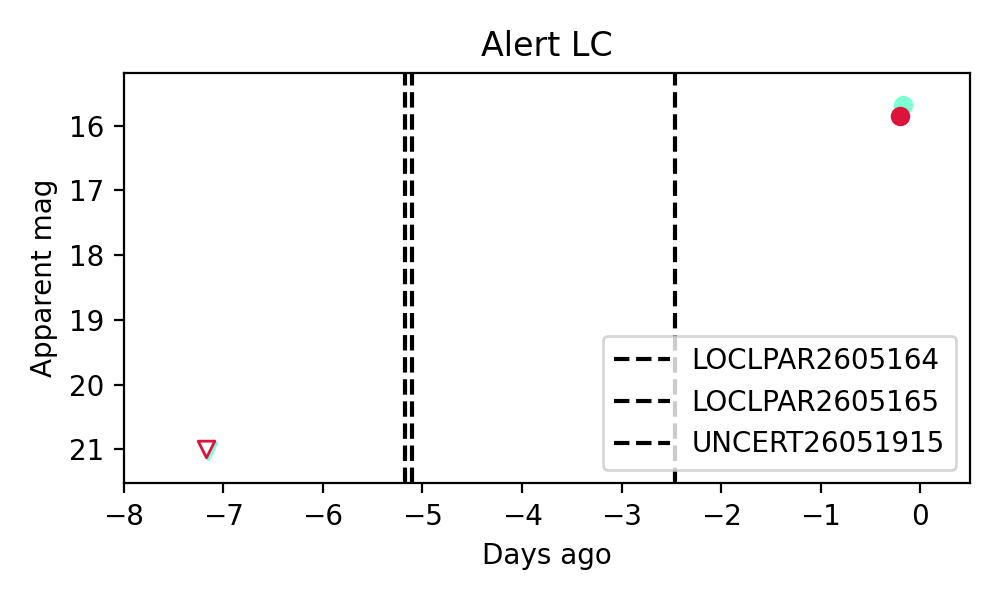
2. ZTF26aaxtrop (Afterglow?FBOT?) [Back to Top] [Share] [Trigger Swift] [Fritz ] [Lasair ]RA, Dec: 277.88458, 7.5875 18h31m32.30s, 7d35m14.99sGalactic (l, b): 37.46647, 7.8576 ext(g-r) = 0.324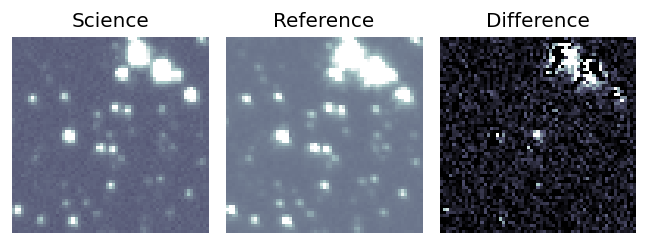
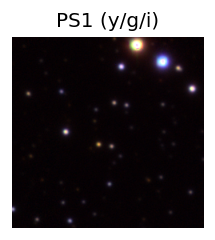
PS1: 1 source in 3 arcsec Closest: d = 4.18 arcsec photoz=0.58+/-0.08 peak abs mag = -23.94 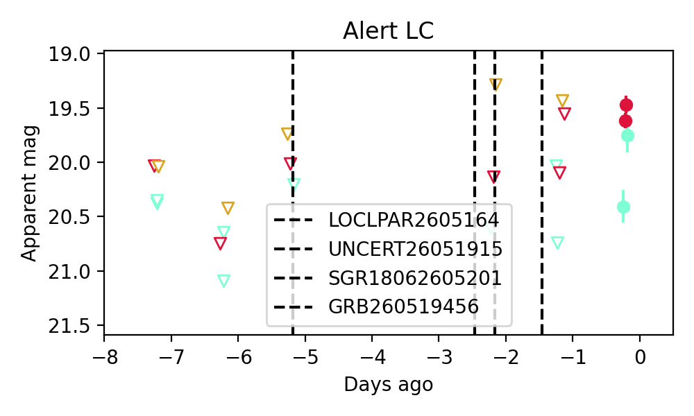
Consistent with synchrotron, g-r>0!
3. ZTF26aaxtugs (FBOT?) [Back to Top] [Share] [Trigger Swift] [Fritz ] [Lasair ]RA, Dec: 282.85038, -5.64019 18h51m24.09s, -5d-38m-24.69sGalactic (l, b): 27.90474, -2.56047 ext(g-r) = 1.149PS1: 1 source in 3 arcsec Closest: d = 1.10 arcsec photoz=0.37+/-0.01 peak abs mag = -25.69
Section 2: Older Sources Observed Last Night (20)
0. ZTF26aawsacc (Afterglow?FBOT?) [Back to Top] [Share] [Trigger Swift] [Fritz ] [Lasair ]RA, Dec: 121.74438, 12.24516 8h 6m58.65s, 12d14m42.56sGalactic (l, b): 210.1746, 22.2234 ext(g-r) = 0.03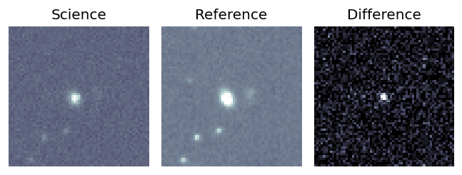
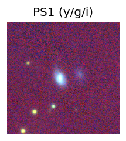
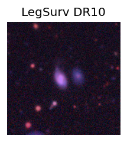
peak abs mag = -19.18 LegacySurvey: 1 sources in 3 arcsec Closest: d = 2.09 arcsec, 106.7 deg (east of north) photoz=0.09 (68% bounds 0.07, 0.12), type=SER peak abs mag = -19.53 (68% bounds -19.01, -20.06) 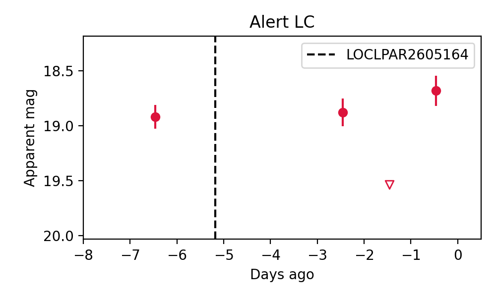
1. ZTF26aawtwql (Afterglow?FBOT?) [Back to Top] [Share] [Trigger Swift] [Fritz ] [Lasair ]RA, Dec: 228.87648, -14.50352 15h15m30.35s, -14d-30m-12.68sGalactic (l, b): 347.4001, 35.64233 WARNING: 3.46 deg from ecliptic plane ext(g-r) = 0.141LegacySurvey: 1 sources in 3 arcsec Closest: d = 0.13 arcsec, 239.4 deg (east of north) photoz=0.09 (68% bounds 0.05, 0.21), type=REX peak abs mag = -19.64 (68% bounds -18.34, -21.65) Consistent with synchrotron, g-r>0!
2. ZTF26aawzcjy (FBOT?) [Back to Top] [Share] [Trigger Swift] [Fritz ] [Lasair ]RA, Dec: 131.38617, 51.39505 8h45m32.68s, 51d23m42.17sGalactic (l, b): 167.34098, 38.42812 ext(g-r) = 0.025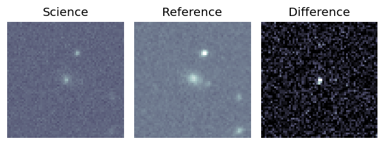
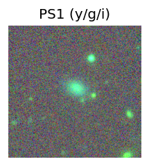
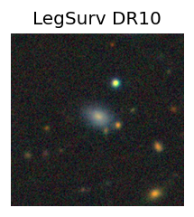
peak abs mag = -20.99 PS1: 1 source in 3 arcsec Closest: d = 1.11 arcsec photoz=0.08+/-0.04 peak abs mag = -18.81 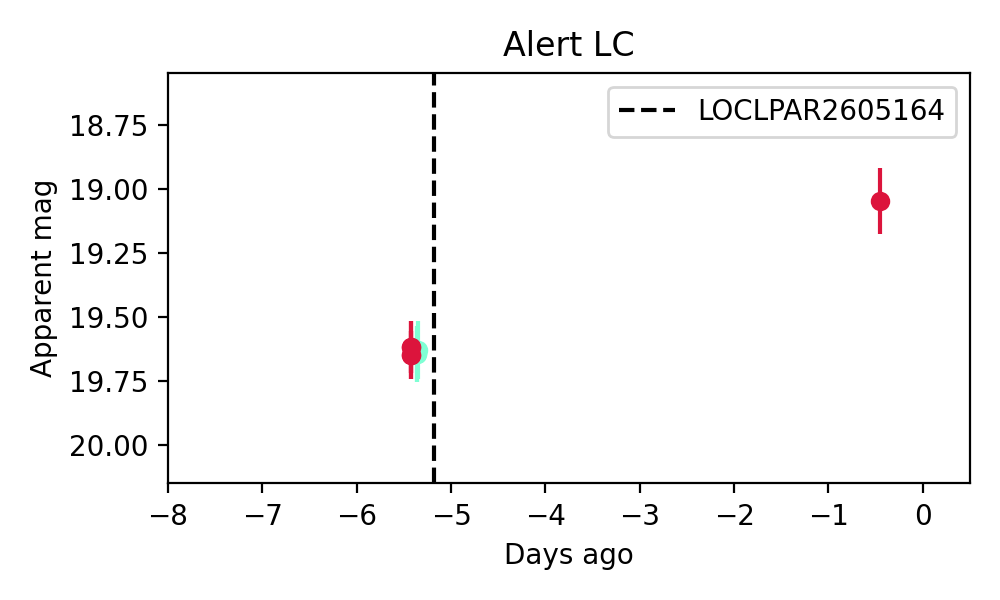
Consistent with synchrotron, g-r>0!
3. ZTF26aawzpcp (FBOT?) [Back to Top] [Share] [Trigger Swift] [Fritz ] [Lasair ]RA, Dec: 185.98626, 21.20115 12h23m56.70s, 21d12m4.12sGalactic (l, b): 254.86014, 81.37497 ext(g-r) = 0.026peak abs mag = -21.14 LegacySurvey: 1 sources in 3 arcsec Closest: d = 0.54 arcsec, 44.3 deg (east of north) photoz=0.19 (68% bounds 0.12, 0.25), type=EXP peak abs mag = -21.26 (68% bounds -20.14, -21.97)
4. ZTF26aawzvtx (FBOT?) [Back to Top] [Share] [Trigger Swift] [Fritz ] [Lasair ]RA, Dec: 213.42251, -3.2812 14h13m41.40s, -3d-16m-52.32sGalactic (l, b): 339.24321, 53.6894 ext(g-r) = 0.063peak abs mag = -20.13 LegacySurvey: 1 sources in 3 arcsec Closest: d = 1.01 arcsec, 211.4 deg (east of north) photoz=0.17 (68% bounds 0.12, 0.2), type=REX peak abs mag = -20.34 (68% bounds -19.55, -20.77)
5. ZTF26aaxalgu (FBOT?) [Back to Top] [Share] [Trigger Swift] [Fritz ] [Lasair ]RA, Dec: 188.95212, -1.04706 12h35m48.51s, -1d-2m-49.40sGalactic (l, b): 294.70287, 61.57472 WARNING: 2.59 deg from ecliptic plane ext(g-r) = 0.026peak abs mag = -19.57 LegacySurvey: 1 sources in 3 arcsec Closest: d = 2.34 arcsec, 102.0 deg (east of north) photoz=0.1 (68% bounds 0.09, 0.12), type=SER peak abs mag = -19.08 (68% bounds -18.8, -19.39) Consistent with synchrotron, g-r>0!
6. ZTF26aaxhekl (Afterglow?) [Back to Top] [Share] [Trigger Swift] [Fritz ] [Lasair ]RA, Dec: 213.38247, 4.7545 14h13m31.79s, 4d45m16.20sGalactic (l, b): 347.73345, 60.27656 ext(g-r) = 0.024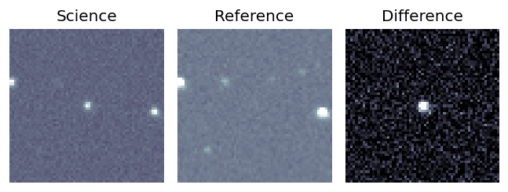
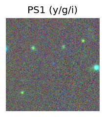
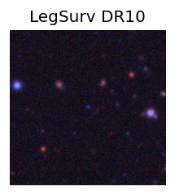
LegacySurvey: 1 sources in 3 arcsec Closest: d = 0.23 arcsec, 309.9 deg (east of north) photoz=2.18 (68% bounds 1.23, 2.43), type=PSF peak abs mag = -29.74 (68% bounds -28.21, -30.02) 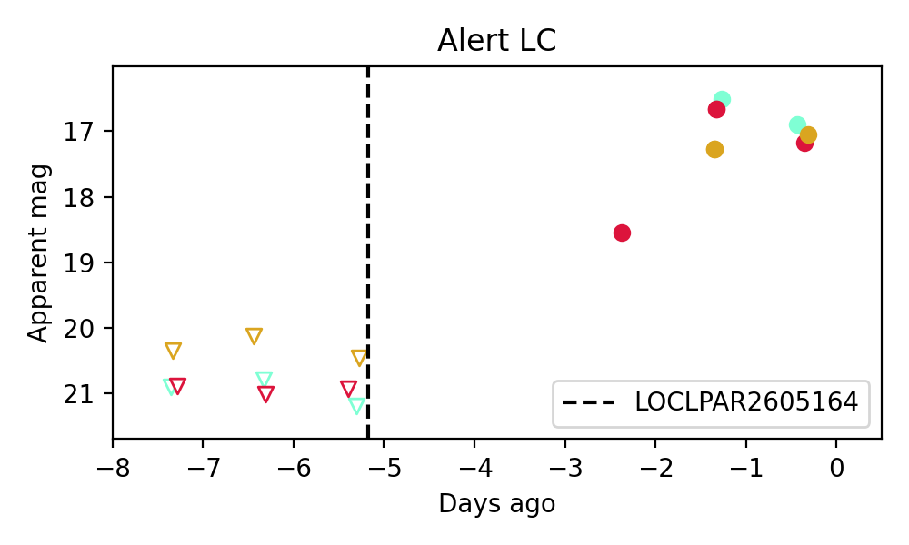
Consistent with synchrotron, g-r>0!
7. ZTF26aaxhvtq (Afterglow?) [Back to Top] [Share] [Trigger Swift] [Fritz ] [Lasair ]RA, Dec: 253.05842, -4.10199 16h52m14.02s, -4d-6m-7.15sGalactic (l, b): 14.42609, 24.1147 ext(g-r) = 0.232 Consistent with synchrotron, g-r>0!
8. ZTF26aaxhwhr (Afterglow?) [Back to Top] [Share] [Trigger Swift] [Fritz ] [Lasair ]RA, Dec: 251.24251, -12.02058 16h44m58.20s, -12d-1m-14.07sGalactic (l, b): 6.21823, 21.1844 ext(g-r) = 0.555
9. ZTF26aaxilhv (FBOT?) [Back to Top] [Share] [Trigger Swift] [Fritz ] [Lasair ]RA, Dec: 235.12691, 43.96268 15h40m30.46s, 43d57m45.66sGalactic (l, b): 70.68839, 52.2413 ext(g-r) = 0.018peak abs mag = -21.53 PS1: 1 source in 3 arcsec Closest: d = 0.61 arcsec photoz=0.55+/-0.24 peak abs mag = -22.38
10. ZTF26aaxlylk (FBOT?) [Back to Top] [Share] [Trigger Swift] [Fritz ] [Lasair ]RA, Dec: 240.45383, 57.30363 16h 1m48.92s, 57d18m13.06sGalactic (l, b): 88.54673, 45.06784 ext(g-r) = 0.03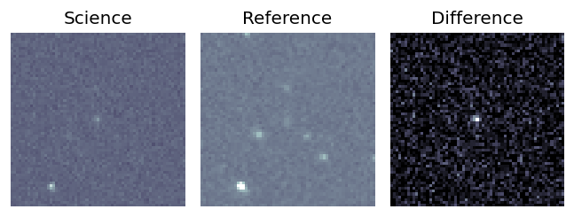
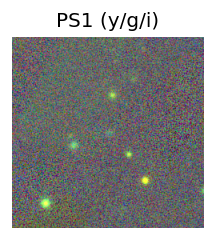
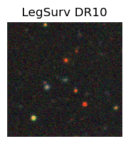
peak abs mag = -21.03 PS1: 1 source in 3 arcsec Closest: d = 9.58 arcsec photoz=0.44+/-0.22 peak abs mag = -22.03 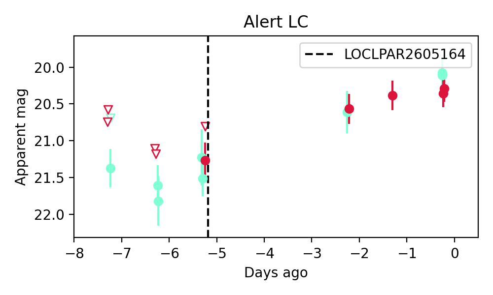
11. ZTF26aaxnixn (Afterglow?) [Back to Top] [Share] [Trigger Swift] [Fritz ] [Lasair ]RA, Dec: 291.49256, -18.63277 19h25m58.21s, -18d-37m-57.97sGalactic (l, b): 19.74597, -15.79987 WARNING: 3.3 deg from ecliptic plane ext(g-r) = 0.098
12. ZTF26aaxnkxg (FBOT?) [Back to Top] [Share] [Trigger Swift] [Fritz ] [Lasair ]RA, Dec: 323.31601, 3.1136 21h33m15.84s, 3d 6m48.95sGalactic (l, b): 57.27743, -33.49525 ext(g-r) = 0.056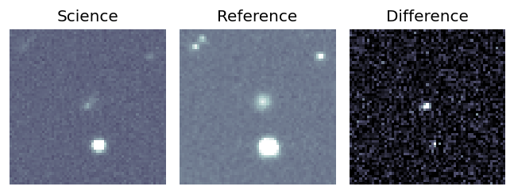
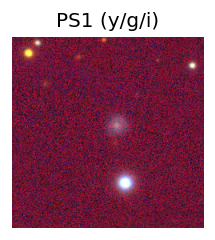
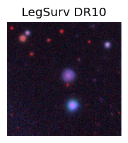
peak abs mag = -18.67 LegacySurvey: 1 sources in 3 arcsec Closest: d = 1.21 arcsec, 270.2 deg (east of north) photoz=0.47 (68% bounds 0.28, 0.9), type=EXP peak abs mag = -22.81 (68% bounds -21.49, -24.51) 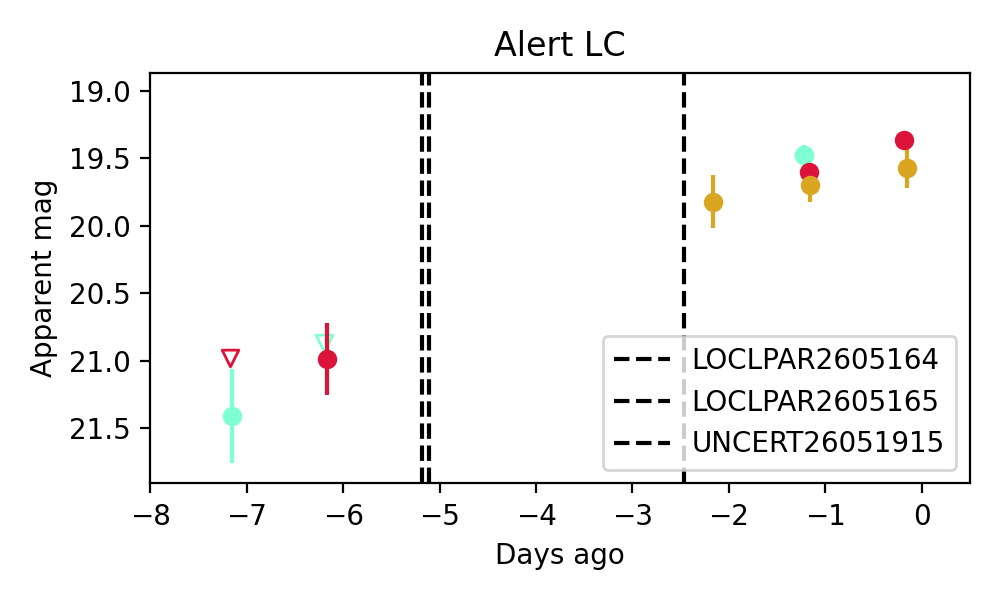
13. ZTF26aaxnlmg (FBOT?) [Back to Top] [Share] [Trigger Swift] [Fritz ] [Lasair ]RA, Dec: 287.99664, -5.99152 19h11m59.19s, -5d-59m-29.48sGalactic (l, b): 29.91, -7.28764 ext(g-r) = 0.584PS1: 1 source in 3 arcsec Closest: d = 0.76 arcsec photoz=0.25+/-0.04 peak abs mag = -22.24 Consistent with synchrotron, g-r>0!
14. ZTF26aaxrhde (Afterglow?) [Back to Top] [Share] [Trigger Swift] [Fritz ] [Lasair ]RA, Dec: 257.59075, -18.5249 17h10m21.78s, -18d-31m-29.63sGalactic (l, b): 4.34119, 12.43583 WARNING: 4.41 deg from ecliptic plane ext(g-r) = 0.242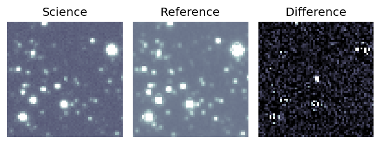
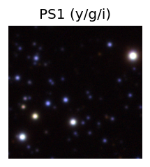
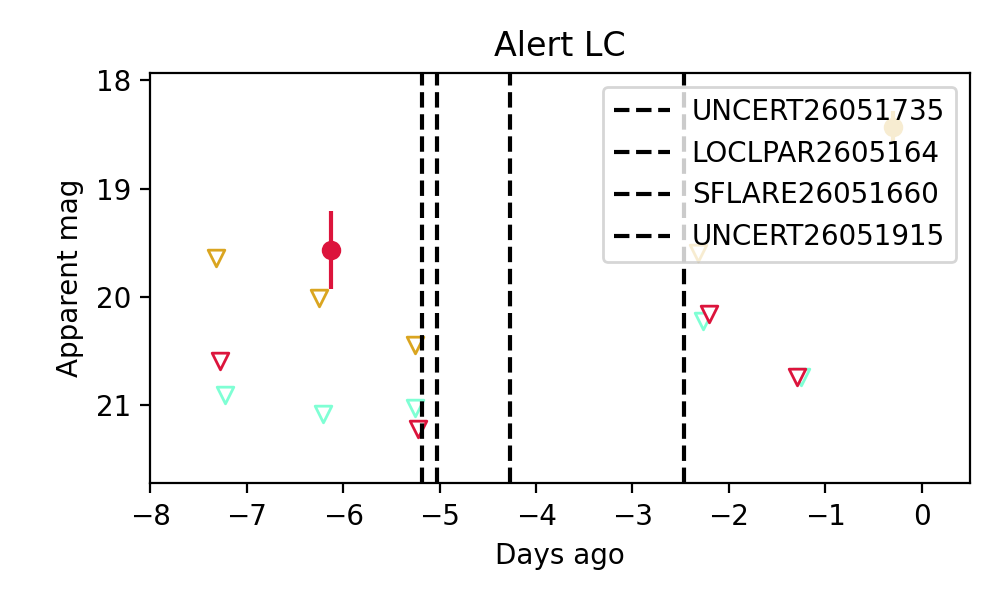
15. ZTF26aaxrive (FBOT?) [Back to Top] [Share] [Trigger Swift] [Fritz ] [Lasair ]RA, Dec: 257.95825, 11.43955 17h11m49.98s, 11d26m22.39sGalactic (l, b): 32.18015, 27.24053 ext(g-r) = 0.141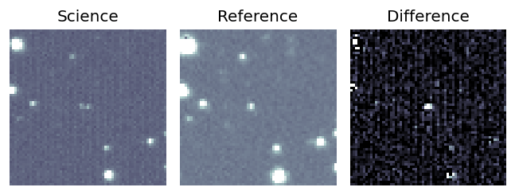
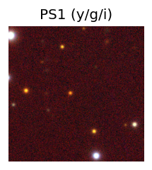
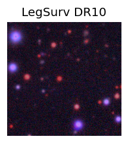
LegacySurvey: 1 sources in 3 arcsec Closest: d = 2.87 arcsec, 89.8 deg (east of north) photoz=0.15 (68% bounds 0.05, 0.37), type=PSF peak abs mag = -19.99 (68% bounds -17.25, -22.15) 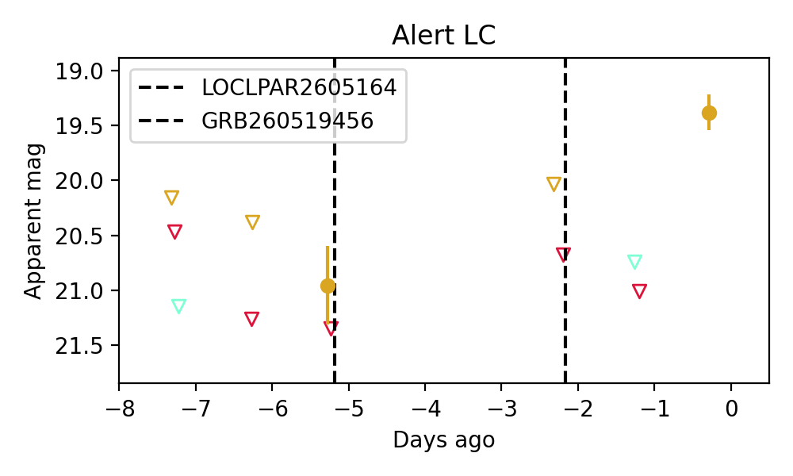
16. ZTF26aaxrsqh (Afterglow?) [Back to Top] [Share] [Trigger Swift] [Fritz ] [Lasair ]RA, Dec: 245.12025, 36.73649 16h20m28.86s, 36d44m11.35sGalactic (l, b): 58.90055, 45.17693 ext(g-r) = 0.012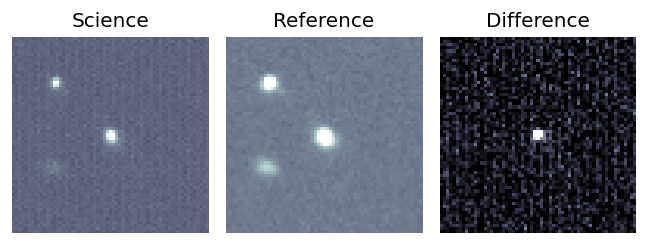
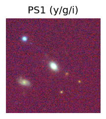
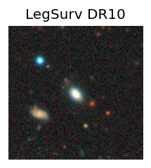
peak abs mag = -19.48 PS1: 1 source in 3 arcsec Closest: d = 0.91 arcsec photoz=0.08+/-0.00 peak abs mag = -19.08 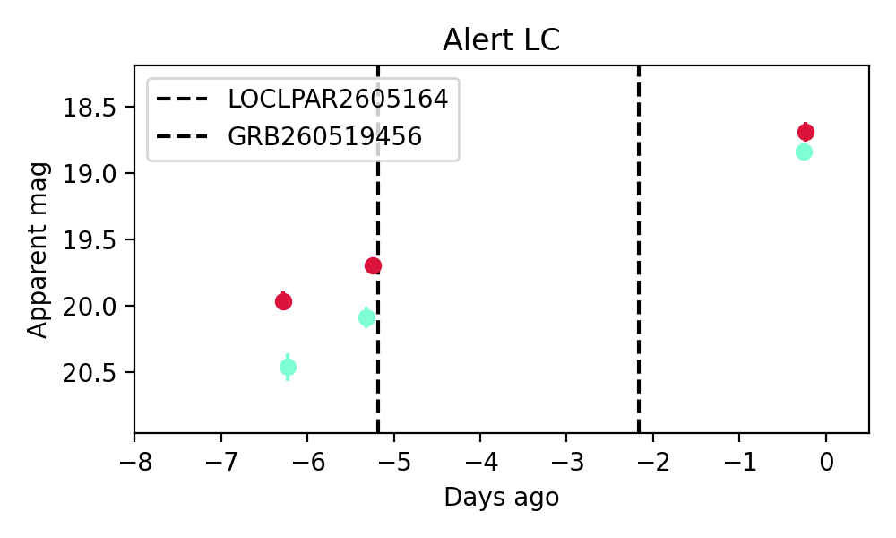
Consistent with synchrotron, g-r>0!
17. ZTF26aaxrulq (FBOT?) [Back to Top] [Share] [Trigger Swift] [Fritz ] [Lasair ]RA, Dec: 244.50763, 30.02366 16h18m1.83s, 30d 1m25.17sGalactic (l, b): 49.37125, 44.93338 ext(g-r) = 0.039peak abs mag = -19.10 LegacySurvey: 1 sources in 3 arcsec Closest: d = 0.55 arcsec, 350.7 deg (east of north) photoz=0.13 (68% bounds 0.13, 0.14), type=SER peak abs mag = -18.89 (68% bounds -18.81, -18.99)
18. ZTF26aaxrybo (Afterglow?) [Back to Top] [Share] [Trigger Swift] [Fritz ] [Lasair ]RA, Dec: 234.34269, -16.4915 15h37m22.25s, -16d-29m-29.40sGalactic (l, b): 350.52116, 30.65482 WARNING: 2.83 deg from ecliptic plane ext(g-r) = 0.113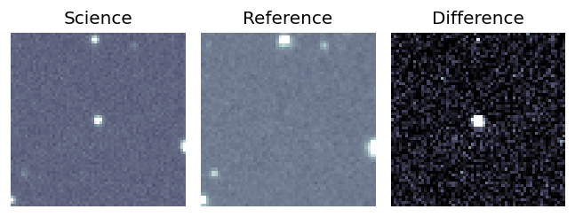
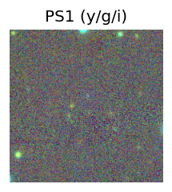
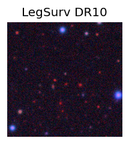
LegacySurvey: 1 sources in 3 arcsec Closest: d = 3.06 arcsec, 195.6 deg (east of north) photoz=1.02 (68% bounds 0.93, 1.12), type=REX peak abs mag = -26.49 (68% bounds -26.25, -26.73) 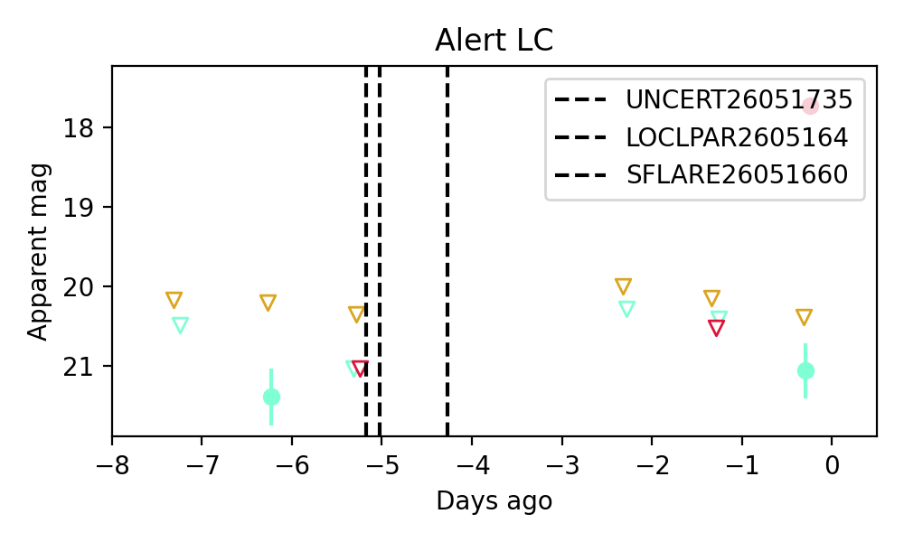
Consistent with synchrotron, g-r>0!
19. ZTF26aaxtwbd (Afterglow?) [Back to Top] [Share] [Trigger Swift] [Fritz ] [Lasair ]RA, Dec: 281.91124, 9.56371 18h47m38.70s, 9d33m49.34sGalactic (l, b): 41.03769, 5.17988 ext(g-r) = 0.623PS1: 1 source in 3 arcsec Closest: d = 0.22 arcsec photoz=0.05+/-0.01 peak abs mag = -18.27 Consistent with synchrotron, g-r>0!